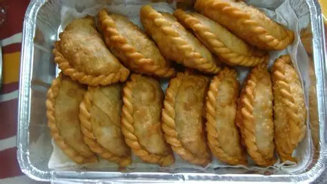
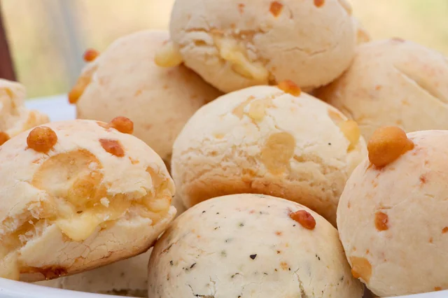
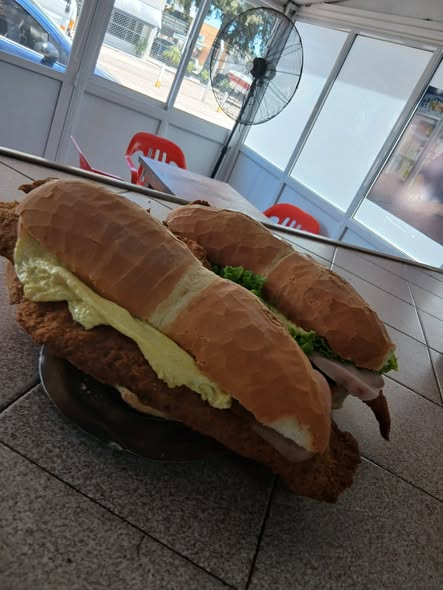

Gastronomía en Gualeguay
La ciudad de Gualeguay ofrece una rica tradición culinaria que combina recetas criollas con influencias modernas y costumbres que se transmiten en familia. Entre sus platos típicos se destacan el asado entrerriano, las empanadas caseras y los pescados de río.
Platos típicos
- Galleta entrerriana
- Empanadas de carne cortada a cuchillo
- Pacú y dorado a la parrilla
- Chipa entrerriano
- Milanesas
Galería





Para abrir el apetito
Sabores del río
El pescado de río forma parte de la cocina local y le da a la mesa un sello bien entrerriano, fresco y cercano.
Cocina casera
Empanadas, galletas y platos sencillos siguen presentes en reuniones familiares y encuentros de todos los días.
Mesa compartida
La gastronomía de Gualeguay invita a sentarse, conversar y disfrutar sin prisa, como en una comida entre amigos.
Datos curiosos
Sabores del río
El pescado de río forma parte de la cocina local y le da a la mesa un sello bien entrerriano, fresco y cercano.
Recetas de familia
Empanadas, galletas y platos sencillos siguen presentes en reuniones familiares y encuentros de todos los días.
Mesa compartida
La gastronomía de Gualeguay invita a sentarse, conversar y disfrutar sin prisa, como en una comida entre amigos.